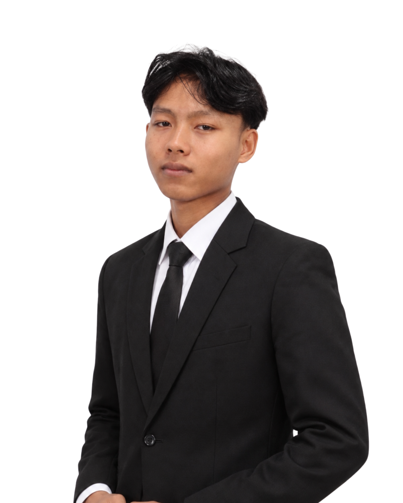

Project Advisor
Ingga Maulana, S.Ak., M.Ak.
Arahan konseptual, akademik, dan supervisi dalam pengembangan penelitian.
BEYONDGREEN.ID is a research initiative focused on Corporate Social Responsibility, ESG, sustainability, and environmental impact. Our first published study examines PT Indah Kiat Pulp & Paper Tbk.
BEYONDGREEN.ID brings together academic guidance and collaborative research to examine CSR claims, environmental performance, sustainability targets, stakeholder impact, and the evidence behind them.
Arahan konseptual, akademik, dan supervisi dalam pengembangan penelitian.

Koordinasi proyek & integrasi analisis.

Analisis dampak lingkungan & sosial.

Analisis ESG, sustainability & target.

Riset sumber, visualisasi & dokumentasi.
BEYONDGREEN.ID documents research projects that examine how corporate responsibility is communicated, implemented, measured, and evidenced. Each study is approached as an evidence-led assessment rather than a company profile.
Our work focuses on the distance between sustainability narratives and measurable outcomes. We review public disclosures, targets, environmental indicators, stakeholder dimensions, and supporting evidence to build a more critical picture of corporate CSR performance.
Environmental CSR assessment examining claims, targets, environmental performance, stakeholder considerations, remaining risks, and the evidence available to support sustainability narratives.
Open Research Report ↗Website ini merupakan proyek akademik untuk menilai praktik Corporate Social Responsibility (CSR) lingkungan PT Indah Kiat Pulp & Paper Tbk.
Fokus kami bukan hanya melihat program yang dilakukan, tetapi membandingkan antara klaim, target, data, hasil, dampak, serta masalah yang masih tersisa.
Karena sebuah program lingkungan tidak otomatis berarti dampak lingkungannya sudah selesai.
Menilai relevansi dan efektivitas program CSR terhadap masalah lingkungan.
Membaca kinerja lingkungan melalui indikator yang terukur.
Menguji konsistensi antara klaim keberlanjutan dan evidence yang tersedia.
We don't simply ask what the company says. We compare the narrative against the numbers, targets, disclosures, and remaining environmental risks.
Operasional industri pulp & paper memiliki potensi dampak lingkungan yang bersifat struktural: emisi, penggunaan air, air limbah, limbah, serta bahan baku kayu.
Potensi dampak lingkungan bukan hanya berasal dari aktivitas CSR atau satu program tertentu, tetapi juga dari karakteristik proses produksi pulp & paper.
Kami melihat CSR sebagai bagian dari sistem pengelolaan dampak, bukan sebagai pengganti pengendalian dampak operasional utama.
Karena itu, indikator negatif juga tetap diperhatikan ketika mengevaluasi keberhasilan program.
Ada progres nyata, tetapi beberapa indikator lingkungan justru bergerak ke arah yang berlawanan dengan target.
Emisi langsung dari aktivitas operasional.
Parameter SO₂ mengalami peningkatan.
Chemical Oxygen Demand pada air limbah.
Limbah B3 tetap besar tetapi turun dari baseline.
Program-program berikut dinilai bukan hanya berdasarkan keberadaannya, tetapi juga output, outcome, dan dampaknya.
Program pengelolaan sampah berbasis masyarakat di Serang untuk mendorong partisipasi dan pengelolaan sampah yang lebih terstruktur.
Rehabilitasi ekosistem pesisir melalui penanaman dan pemulihan kawasan mangrove.
Peningkatan energi terbarukan melalui solar PV, biogas, serta pemanfaatan RDF sebagai bagian dari transisi energi.
Peningkatan penggunaan serat daur ulang sebagai bagian dari pendekatan ekonomi sirkular.
Upaya mengurangi dan mengelola limbah B3 serta berbagai jenis limbah operasional.
Kemitraan konservasi biodiversitas dengan lembaga dan organisasi terkait untuk mitigasi risiko ekosistem dan satwa.
Sebuah program dapat menghasilkan output yang besar, tetapi dampak jangka panjang harus dibuktikan dengan indikator outcome dan impact.
Dana, manusia, teknologi, fasilitas, energi, kemitraan, dan sumber daya lain.
Contoh: jumlah bibit ditanam, volume sampah dikelola, kapasitas solar PV.
Perubahan perilaku, kualitas lingkungan, pengurangan risiko, atau efisiensi.
Perubahan lingkungan dan sosial yang bertahan dalam jangka panjang.
SRV2030 menjadi benchmark utama untuk membaca konsistensi target lingkungan perusahaan.
Target minimum 50% energi terbarukan.
Penggunaan serat daur ulang menunjukkan progres kuat.
Progress terhadap target pengurangan intensitas karbon.
Progress masih membutuhkan akselerasi.
Pengurangan penggunaan air belum mendekati target akhir.
Sebagian indikator positif, sebagian masih berlawanan arah.
Kami tidak langsung memberikan label greenwashing. Kami menguji konsistensi antara klaim keberlanjutan dengan evidence yang tersedia.
Semakin banyak klaim yang memiliki data, target, pengungkapan negatif, dan verifikasi, semakin kuat kredibilitasnya.
Masyarakat sekitar fasilitas operasional merupakan pihak yang dapat merasakan dampak lingkungan secara langsung.
Pemerintah dan regulator berperan dalam pengawasan kepatuhan serta standar lingkungan.
Karyawan berhubungan langsung dengan sistem operasional, keselamatan, dan budaya sustainability.
Konsumen semakin membutuhkan produk yang memiliki klaim lingkungan yang kredibel.
Investor membutuhkan informasi yang konsisten untuk menilai risiko ESG dan keberlanjutan.
Organisasi lingkungan dapat menjadi mitra, pengawas, sekaligus sumber perspektif independen.
Setiap kesimpulan seharusnya dapat ditelusuri kembali ke data, disclosure, target, atau validasi eksternal.
6.34 juta tCO₂e · carbon intensity 1.08 → 1.17
141.8 → 230.02 mg/Nm³
137.8 → 150.97 mg/l
364,294 tons · baseline 768,431 tons
54% renewable energy
52% recycled fiber
Indah Kiat Serang · 2025
Berdasarkan assessment kami, CSR lingkungan perusahaan menunjukkan tindakan nyata dan beberapa progres terukur. Namun, peningkatan pada sejumlah indikator lingkungan menunjukkan bahwa program tersebut belum dapat dianggap menyelesaikan seluruh akar masalah operasional.
Rekomendasi dirancang agar dapat diukur, memiliki penanggung jawab, timeline, serta indikator keberhasilan yang jelas.
Bangun dashboard publik yang memperlihatkan indikator lingkungan material secara berkala, termasuk tren positif maupun negatif.
Setiap environmental claim yang digunakan dalam komunikasi perusahaan harus memiliki evidence, baseline, target, dan indikator hasil yang jelas.
Fokus 2027–2030 harus diarahkan pada indikator yang masih tertinggal agar target SRV2030 tidak hanya menjadi target administratif.
Sustainability is not defined by how green a story sounds, but by whether the evidence supports it.